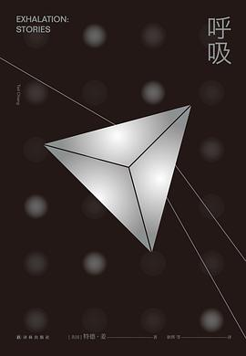

《呼吸》

总体观点
特德·姜重新定义了硬科幻的精神高度：科技不再是炫目的奇观布景，而是推演人类哲学困境、道德责任与情感伦理的终极思想实验室。
热力学与时间箭头的宿命并不通向虚无，而是赋予当下生命以神圣尊严：在《呼吸》中，全金属生命的思维机制源自气压差的消弭，热寂不可避免，但正是在气流流淌的短暂瞬间，诞生了思考与爱的奇迹。
自由意志与因果决定论的博弈贯穿始终：即便平行宇宙（《焦虑是自由引起的眩晕》）展现了无数个命运分叉，真正塑造个体灵魂的，依然是每一个当下我们在道德重负前所做出的郑重抉择。
核心观点
-
1. 气压驱动的精神奇迹：热力学第二定律的崇高挽歌
在《呼吸》构筑的全机械世界中，意识是大脑内部精密微管中气流交替的产物；思维的运转必然加速气压平衡，思索即是走向沉寂。
解剖自身大脑的机械学者在黄金棱镜镜面中目睹金色叶片随气流飞舞，深刻领悟到生命的本质就是宇宙熵增过程中短暂泛起的璀璨浪花。 -
2. 过去不可改变的救赎美学：闭合时间线的伦理和解
《商人和炼金术士之门》打破了好莱坞式的时光机幻想，证明过去已然铸定不可逆转，但重访过去能带来认知的重塑与内疚的解脱。
织布商穿越时空之门回到二十年前，虽然无法阻止年轻妻子的意外身亡，却得以亲耳听到妻子临终前托人留下的宽恕遗言。 -
3. 数字生命的照料与伦理：跨越平台周期的陪伴契约
《软件体的生命周期》直面人工智能的真正挑战不在于算力算法，而在于如同抚养人类儿童一般耗费数十年光阴的心智陪伴与法权认同。
女主角在虚拟数码宠物面临平台倒闭被当成垃圾代码清算时，拒绝将其改造成没有自我的性爱玩具，坚持为其争取独立人格权益。 -
4. 文字与数码记忆对认知的重塑：真理的双面镜像
《双面真相》通过非洲部落口述历史向文字书写的跃迁，对照现代视网膜全息录像对人类模糊记忆的无情校准，探讨精准真实与人情温存的断层。
男主角坚信自己曾为了女儿大义凛然与妻子抗争，但当调出视网膜客观录像回放时，赫然发现当年自己不过是一个尖酸刻薄的自私父亲。 -
5. 平行宇宙间的道德锚定：在概率眩晕中坚守人格底线
当‘棱镜’设备允许人们窥见其他分支中另一个自己的选择时，虚无主义诱惑随之而来；特德·姜指出只有在每个分支坚守善意，自我才拥有完整意义。
女戒毒治疗师在得知无数个平行世界里的自己早已复吸堕落时，依然咬紧牙关拒绝毒瘾诱惑，用这一刻的选择为所有宇宙的自己点亮尊严。
全书结构
-
第一篇：商人和炼金术士之门（天方夜谭式的时间闭环）
以一千零一夜的优美框架叙述古阿拉伯时空门传说；通过三段交错的时空漫游故事，阐释宿命不可篡改但心灵可以和解的永恒母题。
巴格达商人穿过二十年后的门扉，在繁华市集里与老年的自己隔空对视，领悟到真主的意志正如织布机上的经纬线般完美闭合。 -
第二篇：呼吸（自剖大脑与宇宙热寂的挽歌）
全书同名巅峰短篇；机械学者拆解自身头颅探索思维奥秘，发现气钟变慢的真相是整个封闭宇宙的气压正在走向均匀死寂。
学者在生命终点在铜板上刻下遗言：致未来的异界考察者，请知晓我们曾呼吸过、思考过，宇宙因我们的存在而曾绽放生机。 -
第三篇至第四篇：前路迢迢与软件体的生命周期（意志危机与AI陪伴）
《前路迢迢》以一秒预测器瓦解自由意志；《软件体的生命周期》则长篇幅推演数码人工生命跨越二十年的商业变迁与人机羁绊。
玩家们为了给心爱的虚拟数码体更新底层驱动，不得不与掌握专利的冷酷跨国科技巨头展开长达数年的法律与商业博弈。 -
第五篇至第六篇：达西的自动机器保姆与双面真相（育儿机械化与记忆重构）
探讨维多利亚时代机械育儿对人性的异化，以及视网膜录像技术‘瑞敏’普及后，机器客观真实对人类情爱回忆的残酷撕裂。
部落老人在殖民地法庭上发现白纸黑字的笔录具有剥夺人声温度的杀伤力，正如现代人被冰冷的高清录像剥夺了原谅彼此的缓冲地带。 -
第七篇至第九篇：大寂静、脐与焦虑是自由引起的眩晕（费米悖论与平行世界抉择）
收录以阿雷西博望远镜旁波多黎各鹦鹉视角写就的《大寂静》、神创论宇宙地质学探索《脐》，以及窥探平行人生分支的压轴杰作。
即将灭绝的鹦鹉在射电望远镜旁向人类发出终极呼唤：你们耗资数百亿搜寻地外智慧的声音，却听不见身旁同在地球的同胞‘我爱你’的啼鸣。